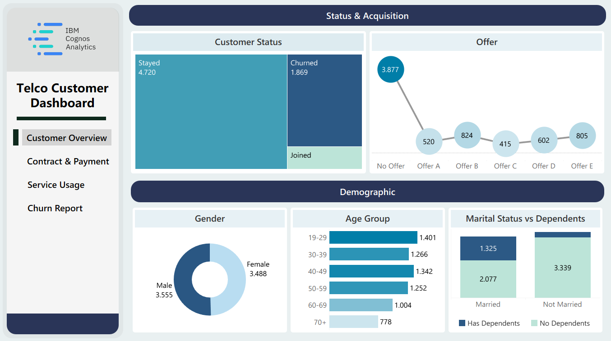
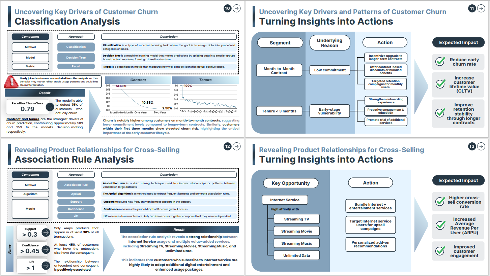

Statistics graduate with hands-on experience in data analysis, visualization, and statistical modeling using Python, SQL, and Tableau. Experienced in transforming data into actionable insights through academic and personal projects. Seeking opportunities across data, business, and other roles that leverage analytical and problem-solving skills.
Projects


Data-Driven Strategies for Telco Customer Retention and Revenue Growth
Performed customer analytics on IBM Cognos Analytics telco dataset to support retention and growth strategies. Conducted classification analysis to identify key churn drivers and association rule analysis to identify high-potential product bundling and cross-selling patterns, enabling targeted business recommendations to improve customer engagement and revenue performance.
Data Mining & Business IntelligenceClassification AnalysisAssociation Rule Analysis
Inventory Analysis of Product-Level Performance in a Liquor Retail Company
Performed inventory and sales analysis on a liquor retail dataset to evaluate stock movement and demand patterns. Utilized key inventory metrics such as Inventory Turnover Ratio, Days of Supply, and Reorder Point to assess inventory performance across products.
Inventory Analysis
Geospatial Analysis of Hospital Accessibility in DKI Jakarta
Using spatial data obtained from OpenStreetMap, a network analysis was conducted to evaluate hospital accessibility in the DKI Jakarta region. The analysis included network statistics, degree centrality, and the measurement of the shortest distance from each hospital to the nearest road network node. Degree centrality was utilized to identify key intersections or nodes that play a strategic role in urban connectivity, while distance analysis assessed the spatial proximity of hospitals to major transport links, providing insights into the ease of physical access to healthcare facilities across different areas of the city.
Unstructured Data AnalysisNetwork Analysis
Gene Expression Analysis of Whole Blood in Pediatric Septic Shock Using Supervised and Unsupervised Learning Methods
Using whole blood gene expression data from children (age ≤10 years) within the first 24 hours of admission to the Pediatric Intensive Care Unit (PICU) due to septic shock, obtained from the Gene Expression Omnibus (GEO), a comprehensive analysis was conducted. This included differential gene expression analysis to identify significantly expressed genes between healthy controls and septic shock patients; supervised learning for classification between the two groups using Logistic Regression, K-Nearest Neighbors, and Support Vector Machine models; unsupervised learning through clustering using K-Means Clustering, Hierarchical Clustering, Gaussian Mixture Model, HDBSCAN, and OPTICS models to group genes into specific clusters and biclustering using Spectral Biclustering to simultaneously cluster both genes and samples based on expression data; and gene ontology (GO) enrichment analysis to explore the potential biological functions associated with genes linked to septic shock.
Topic-Level Sentiment Analysis of the 32% U.S. Import Tariff Policy on Indonesia Using a BERT-Based Approach
Using data scraped via the YouTube Data API v3 from the comment section of the video “Digebuk Tarif 32% Trump! Ekonomi Indonesia Bisa Jeblok?” uploaded by the Metro TV channel, topic-level sentiment analysis was conducted. BERTopic was applied for topic modeling to group comments into specific topics, and XLM-RoBERTa was used for zero-shot sentiment classification to categorize each comment as either positive or negative. The goal was to examine the sentiment distribution, positive and negative, within each identified topic.
Web MiningNatural Language Processing (NLP)Topic-ModellingSentiment Analysis
Understanding e-Paylater Usage Through Demographic Segmentation and Psychometric Analysis
Using data obtained from Mendeley Data contains information on respondents’ demographic characteristics and survey responses regarding the use of e-Paylater services. The analysis involved exploring respondent profiles based on demographic characteristics by distinguishing between users and non-users of e-Paylater, conducting validity and reliability tests to assess whether the survey items were valid and the instrument reliable, and performing user segmentation through K-Modes Clustering based on demographic attributes.
Data Exploration & VisualizationValidity & Reliability TestClustering for User Segmentation
Skills
Microsoft Excel
Proficient in using essential formulas such as SUM, AVERAGE, MIN, MAX, and COUNT for performing common calculations and data summaries.
Capable of applying Data Validation and Conditional Formatting to improve data clarity and ensure consistency.
Familiar with lookup and conditional functions including VLOOKUP, XLOOKUP, COUNTIFS, SUMIFS, UNIQUE, and FILTER for handling structured data.
Able to create Pivot Tables and Pivot Charts to present key insights from datasets.
SQL
Familiar with basic Data Definition Language (DDL) and Data Manipulation Language (DML) operations in MySQL, including CREATE, ALTER, DROP, TRUNCATE, SELECT, INSERT INTO, UPDATE, and DELETE.
Experienced in using aggregate functions such as COUNT, SUM, AVG, MIN, and MAX for summarizing data effectively.
Able to write and optimize queries using TRIGGER and stored PROCEDURE for automated and reusable data operations.
Python
Able to perform web scraping tasks, including extracting user-generated content from Google Play reviews and YouTube comments.
Proficient in data preprocessing, including handling missing values, duplicates, outliers, and performing table joins or splits as needed.
Skilled in descriptive data analysis and visualization using Pandas, Matplotlib, and Seaborn.
Experienced in preparing data for machine learning through feature engineering, scaling, encoding, and train-test splitting.
Capable of applying supervised learning models (classification and regression) and unsupervised techniques (clustering and association rule mining).
Tableau
Able to create basic visualizations such as bar charts, pie charts, and line charts using Tableau Public.
Capable of customizing visual elements including labels, colors, and tooltips for clear data presentation.
Experienced in building simple dashboards by combining multiple sheets and applying cross-sheet filters for interactive user experience.
Relevant Courses
Formal
Data Exploration & VisualizationForecasting MethodDatabase for Data ScienceSampling & Survey DesignCategorical Data AnalysisDatabase for Data ScienceData Mining & Business IntelligenceWeb MiningUnstructured Data Analysis

 Microsoft Excel
Microsoft Excel
 SQL
SQL
 Tableau
Tableau